don`t worry, Be Happy !

|
|
don`t worry, Be Happy !
|
|
|
24, 25, 26 декабря 2005. Предновогодний Мамай-тропинг.
Лена уже давно хотела сходить на Мамай, для этого были приготовлены новые ботинки, штаны, куртка и лыжи. Деревянные, по тропе кататься :) Из Иркутска приехали Юля СНежная и Леха Пестов с гитарой! Гитара будет жить в зимухе, а мы будем отмечать наступающий Новый год заранее, потому как 31-го кое кому выбраться в лес никак не получится. На электричке доехали до лесу, все белым бело. Снег сыпет,
и мало и много и без остановки. До шлагбаума дошли все вместе, только
лыжи не доехали - к ним прилипал снег и я их закопал :) Лена медленно
и торжественно несла гитару. После шлагбаума Леха и Юля доблестно устремились
на снегоборьбу, каждый час выходя на радиосвязь (Леха взял у кого-то
парочку JJ-connection на пробу). Я и Лена потихоньку брели следом. Быстро
сказка сказывается, да не скоро тропа делается - 9 часов (!) мы добирались
до засыпаной по самую крышу зимухи. Тропили в конце пути по пояс в снегу!
Да, нынче тропинг ставит все рекорды :) Вышли утром из сумрака, и в
сумрак вечером пришли. Зима. 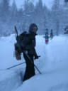 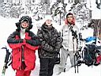 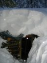 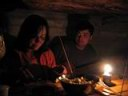 Вечер прошел в приятных заботах - растопить печку, переодеться, сварить ужин (+ салатики праздничные настругать :), покушать, поиграть на гитаре, отдохнуть и поговорить. А за разговорами неслышно подкралась полночь - все бегом наряжать елку компакт-дисками и разливать перцовку по кружкам, запускать фейерверк и весело отмечать Новый Год ! ну, не совсем новый, но для нас самый отмечательный :) 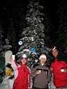 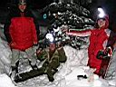 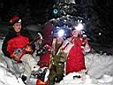 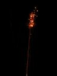 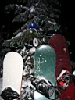 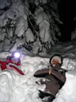 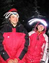 Выпивали на морозе, водили хоровод по пояс в снегу, пели песни, валялись и маячили фонариками. Потом замерзли и уже в зимухе продолжали при свечах, вкушали праздничный салат и из запотевшего пузыря :) 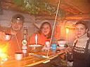 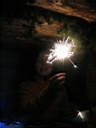 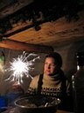 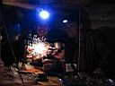 Леха радовал нас игрой на гитаре и веселими рассказами. Юлю тронула песня "Первая встречная", я был в восторге от панковский и пародийных номеров, а Лена была в отключке на верхней полке, умаялась девченка с непривычки :) Юля тоже потом прилегла. Леха колол дрова и насобирал древесных личинок, а потом пожарил их. Под перцовочку закуска :) Чего-то мы долго так засиделись, потом еще чай пивнули и тоже уснули. Под утро :)
|
Непрерывно сыпящий снег создает красивейшие сугробы и шапки округлой формы: Тиха мамайска ночь, но сало лучше перепрятать !
|